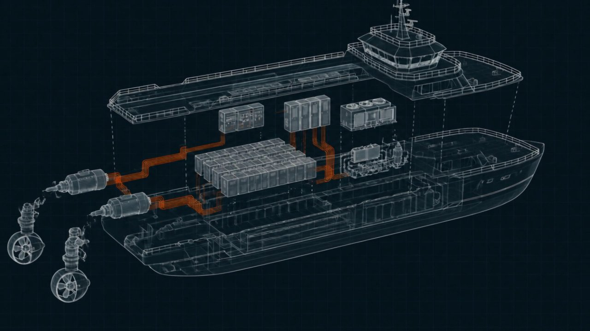

Marine, naval & offshore suppliers
Hybrid propulsion, underwater robotics and subsea connectivity: components built to last at sea.
At sea, a component faces salt corrosion, permanent humidity, vibration and, in subsea applications, pressures of several hundred bar. The sector adds a constraint of its own : certification by classification societies (DNV, ABS, Bureau Veritas), required for any equipment installed on board a classed vessel. Buy-inner lists specialists in the field : Corvus Energy (marine energy storage), Exail and Saab Seaeye (underwater robotics and navigation), MacArtney (subsea connectivity).
Take the ship apart, find the supplier
The ship comes apart piece by piece: each piece of equipment leads to the manufacturers who make it.

Marine-specific selection criteria
- ClassificationDNV, ABS or BV type approval, essential for installation on board a classed vessel.
- Sealing & pressureIP67/IP68 on deck, immersion pressure rating for subsea use (bar or rated depth).
- CorrosionMaterials (316L stainless steel, titanium, bronze), surface treatments, cathodic protection.
- Fire safetyFor marine ESS: thermal runaway detection, ventilation, dedicated fire suppression.
- Maintenance at seaAccessibility, modularity, remote monitoring, because vessel downtime is expensive.
The sector's manufacturers on Buy-inner
Energy storage systems for hybrid and electric propulsion (Corvus Energy), remotely operated underwater vehicles and inertial navigation (Saab Seaeye, Exail), subsea connectors and systems (MacArtney).
See all naval sector suppliers →Where to look
- Batteries & storageClass-certified marine ESS, packs for hybrid propulsion and electric vessels.
- Cables & connectorsSubsea connectivity, penetrators, umbilical cables.
- SensorsInertial navigation, sonars, oceanographic instrumentation.
- Motors & drivesThrusters, ROV motors, winch drives.
- Hybrid propulsion & electric vessels
- ROV & underwater robotics
- Offshore energy (wind, O&G)
- Oceanography & naval defense
Do you supply the naval sector ?
List your products for free : you only pay for a lead you have accepted.
List my company →